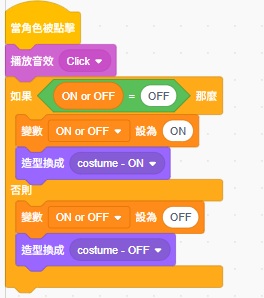

2. 簡易電路入門邏輯設計
[ 系統狀態偵測 ]

[ 開關切換邏輯 ]

[ 導線連接偵測 ]

電路模擬邏輯：
- 連接點感應 (circuit_3.png)： 利用「碰到顏色」判斷導線是否接觸到正確的接點。當接觸時
connections complete增加，斷開則減少。 - 手動開關控制 (circuit_2.png)： 當點擊開關角色時，切換
ON or OFF變數並改變造型，模擬真實開關的機械動作。 - 安全防呆機制 (curcuit_1.png)： 在主迴圈中持續偵測，若
connections complete < 3（代表電路有斷點），則強迫系統狀態維持在OFF並切換為關閉造型。